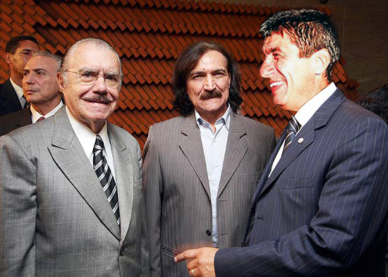

Jorge Furtado


Depois da empolgante questão "Lina Vieira esteve ou não esteve, no final do ano passado, numa reunião onde não se sentiu pressionada a não fazer nada e nada fez?", o debate que agora toma o país (Só se fala noutra coisa!) é:
"Belchior esteve ou não esteve com José Sarney no dia 9 de fevereiro num evento da OAB em Brasilía?"
Pois um documento de papel que acaba de me chegar por e-mail (vou guardar com carinho,, junto com o original de papel da ficha da Dilma no DOPS paulista e a fita com o áudio do grampo Demóstenes-Gilmar) esclarece a questão de forma definitiva: esteve!
Ele e o Fagner!

P.S.: Continuo a achar (é só um palpite) que a foto publicada pelos jornais é uma montagem.
X
Mais detalhes e comentários em:
http://colunistas.ig.com.br/luisnassif/2009/08/29/a-folha-publicou-outro...
29/08/2009 - 18:33
A Folha publicou outro spam?
Em Observação
Por Jorge Furtado
Não sei se alguém já falou nisso, mas achei que era piada a tal foto do Belchior com Sarney, vi que a Folha levou a sério, publicou como notícia. Minha primeira impressão era de montagem. Examinei rapidamente e ainda aposto que é fria, que é montagem. Será possível que tenham publicado mais um spam?
Da Folha Online
Belchior foi fotografado ao lado de Sarney em fevereiro deste ano
GABRIELA GUERREIRO
MARCIO FALCÃO
da Folha Online, em Brasília
O cantor Belchior foi fotografado ao lado do presidente do Senado, José Sarney (PMDB-AP), no dia 9 de fevereiro deste ano, em Brasília. O cantor participou da instalação da Coordenação de Direito Eleitoral do Conselho Federal da OAB (Ordem dos Advogados do Brasil) e posou para fotos ao lado do peemedebista e de representantes da entidade.
X
Por Ricardo Pereira
A Manuela D’Avila, deputada do PCdoB gaúcho, está dizendo no seu twitter que Belchior esteve mesmo no evento da OAB, inclusive postando uma foto em que a própria aparece ao lado do compositor cearense. Belchior, segundo consta, esteve mesmo no evento, agora se chegou a fazer pose ao lado de Sarney isso é outra história. Em todo caso, isso explicaria o sumiço do compositor, ultimamente não pega bem aparecer ao lado do senador.
X
Por Manuela Davila
Gente, eu não disse que estive com o Belchior no mesmo evento. Eu o vi, há uns meses atrás, na OAB. Não tinha nenhum outro parlamentar lá. É possível que essa foto não seja verdadeira. Aliás, tudo é possível... Mas que ele não está desaparecido há esse tempo eu tenho certeza.
Manuela

{kind=link}
E mais; Agora um depoimento: Apesar desta tiração de sarro dos mais jovens, considero o Belchior juntamente com Raul, peças importantes, diria fundamentais para explicar o ser brasileiro, pelo menos o ser de que faço parte. Quando tinha 21 anos estudava na ETFPEL em Pelotas saído de Rio Grande, tive pela primeira vez contato com arte de boa qualidade, frequentei uma iniciativa única que foi o Latino música, com artistas como Belchior, Artur Moreira Lima, Mercedes sosa, Giba Giba, Chico Buarque, Pablo Milanez e o espetacular Bando de Sandino e etc etc etc. Foi uma grande surpresa perceber que os interesses de Belchior através de sua arte era um sonho de integração de nosso continente, na minha cabecinha oca nem me passava pela cabeça que éramos e somos uma porção de terra parecida com um frankstein. Evento completamente distorcido para parecer pop nas chamadas da TV global e transpirando americanidade nos seus auditórios do teatro Guarani e Sete de Abril. Foi uma overdose de como começar a se enxergar uma nação apesar de duas ou três línguas diferentes e tão iguais. Belchior participou não cantando, mas com quadros sobre temas e cenas das américas! Dias depois exatos um dia depois de Raul morrer, presenciei ele de improviso em seu show no teatro sete de abril, render homenagem a quem ele considerou ser uma dos maiores artistas que nosso país teve, cantando com genialidade duas ou três músicas do que ele chamou de amigo, com lágrimas nos olhos, e não era de ver o verde da cana. Não vivi muito nem tão intensamente, mas estive no show cerca de uma semana antes de Raul Falecer, vi cantar vamos alugar o Brasil e percebo que o cara morreu lutando à sua maneira defasado no tempo, mas não no espaço contra esta corja de tucanos urubus e demos. Sinto alívio e conforto quando vi o ex-parceiro de Raul, o Coelho dar o apoio fundamental a Lula num grande gesto de cidadania e coragem que aquilo implicava. Hoje vejo Reginas e Danuzas sentirem medo na TV nos programas do PSDB, mas o medo nos jardins é diferente do medo de Heliópolis, no fundo sabemos que elas não sabem o que é medo de verdade, medo é um pedaço de terra desta importância e riqueza, não falo financeira, não poder cumprir seu destino que é ser pleno e feliz. No final das contas parafraseando Belchior: Caetano, o sol não é tão bonito pra quem vem do norte e vai viver na rua... principalmente na São Paulo de José Serra, não admira que Belchior deu no pé...
Concordo plenamente com o blog, a foto é montagem sim, existem várias versões espalhadas na rede e se verificar-mos bem, os ângulos das cabeças não estão obedecendo nenhum plano, estão dispostas , plantadas de outras cenas, olhando horizontes distintos. Este negócio da globo é furado, agora mesmo anunciaram no fantástico de domingo que executaram a façanha de encontrar o Belchior, e já estão disponibilizando seu nohall para encontrar outros cidadãos neste mesmo estilo. Deveriam tentar um contato com o Agepê, ou quem sabe Lupicínio.
Foram as moscas que publicaram? Então é falsa. Montagem.
Sobre LUNA CALIENTE, ensaio na revista Cronopios: http://www.cronopios.com.br/site/ensaios.asp?id=4168
Do jeito que o Fagner tá enrolado com dívidas e tudo o mais é possível que tenha ido buscar um advogado. Além disso, pode ter ido pedir umas dicas pro Sarney de como se livrar de situações embaraçosas. O que já se sabe, além do fato de Belchior estar no Uruguai é que, agora ele é, realmente, um rapaz latino-americano sem dinheiro no banco.
Verdadeira ou não, já virou piada: http://hariprado.wordpress.com/ (aos incautos aviso: o site do link acima é pura tiração de sarro; não levem nada a sério, mas deem boas gargalhadas)